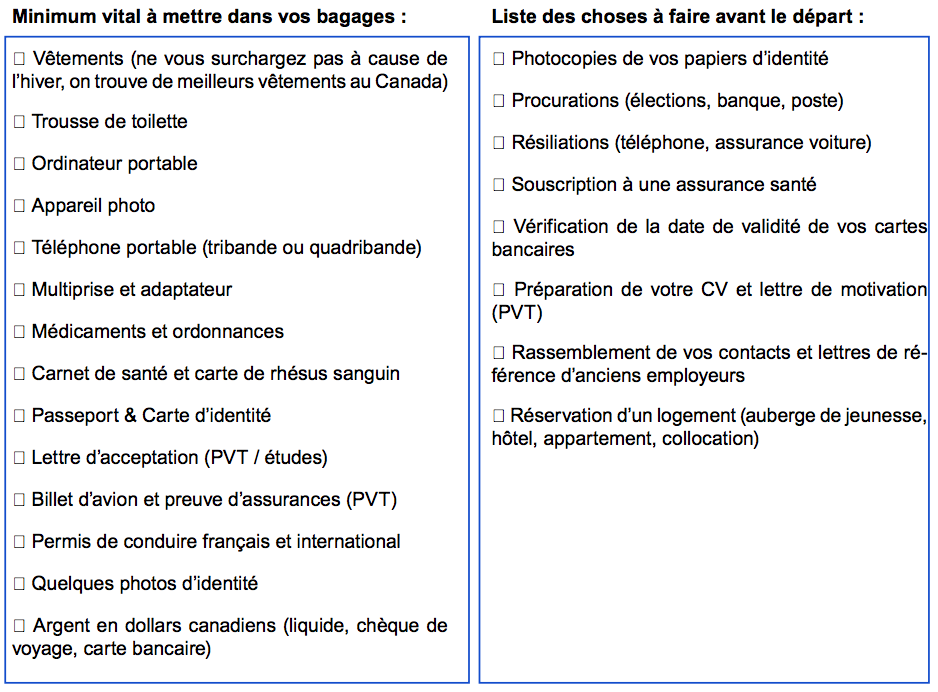

Voyages, Québec -
Toi aussi l’Amérique, t’y a toujours rêvé d’y étudier?
Mais ton niveau d’anglais c’est pas ça?
Toi aussi on t’a toujours dis que le Québec c’est incroyable? Toi aussi t’adore le sirop d’érable et les pancakes?
Comme dit le proverbe québécois :
"L’abeille qui reste au nid n’amasse pas de miel."
Les étapes pour partir:1. Prend la peine d’y réfléchir et pose toi la question si tu as assez de maturité et d’autonomie pour vivre sans tes proches.
2. Informe toi des accords interuniversitaires de ton école, et choisis ta destination.
3. Prépare une lettre de motivation béton et poste ta candidature
- Montre ton intérêt pour l’université: évoque les raisons pour lesquelles tu as choisis cette école et pas une autre. Renseigne toi sur leurs valeurs, leurs points forts.
- Montre ton intérêt pour le Québec : Pourquoi tu as choisis cette destination et pas une autre? Qu’est-ce qui te plaît au Québec(mise à part les poutines et le sirop d’érable)?
- Évoque tes points forts et ta capacité d’adaptation : Tu va être confronté à une culture autre que celle de la France, fait leur part de ton excitation. Qu’est-ce que va t’apporter cette expérience pour ton avenir?
4. Les papiers d’immigrations
- Le formulaire pour l’assurance maladie (le plus souvent SE 401-Q–106 )
- BCI
- Contrat d’étude
- Ta lettre d’acceptation
- Un CAQ (certificat d’acceptation au Québec)
- Un permis d’études
- (Optionnel, mais conseillé) Accueil Plus
Commençons par le commencement. Premièrement partir à l’étranger pour étudier est une décision dont y faut prendre la peine d’y réfléchir.. Bah oui, loin de Papa, Maman, de tous tes amis, de ta culture et de tes petites habitudes. Pose-toi aussi la question financière, est-ce que tu pourras subvenir à tes besoins durant ta période d’études? Sache que la plupart du temps une aide à la mobilité est proposée pour les étudiants étrangers, mais cela suffit pas(informe toi auprès de ton université).
Ça y est, t’en a marre de rester dans ta zone de confort, t’as décidé de partir. C’est bien mais où? Il faut que tu te renseigne auprès de ton école. La plupart des universités françaises ont des accords avec des universités québécoises. Avec l’UPEC, j’avais le choix entre plusieurs destinations : Montréal, Ottawa, 3 Rivières, Sherbrooke, Chicoutimi. Pour ma part j’ai choisi Ottawa ou plutôt Gatineau(côté Québec) pour le côté bilingue de la région(on parle français à Gatineau mais on a juste à traverser la rivière pour se trouver à Ottawa où tout le monde parle anglais). Réfléchissez bien à votre choix de destination, informez-vous sur les villes et leur vie étudiante (leurs activités culturelles, loisirs, nombre d’étudiants, etc..). Par exemple, Chicoutimi est une toute petite ville mais totalement étudiante, à part le campus y a pas grand chose.. Après chacun son truc!
Chaque université à sa démarche d’admission, cependant toutes vont te demander une lettre de motivation. Quelques petits conseils pour ta lettre de motivation:
Ne sois pas trop stressé non plus.. Tu peux demander de l’aide pour ta lettre, et si tu as assez de maturité et que tes notes suivent, il y a pas de raison que tu ne puisses pas partir! Attention : N’attend pas le dernier moment pour commencer les démarches, le départ arrive plus vite que tu ne le crois..
Sûrement la partie la plus importante mais la plus ennuyeuse. Je vais expliquer la manière dont j’ai procédé avec mon point de vue d’étudiant, en essayant de faire simple(même si c’est pas facile). Pour partir en étude au Québec il vous faut plusieurs choses:
Après avoir posté ta candidature et avoir reçu ta lettre d’acceptation(avec un peu de chance), il faut que tu t’occupes de ton immigration sur le territoire québécois. Commence par demander le formulaire SE 401-Q–106 REMPLI à ton assurance étudiante (ou autre, tout dépend où tu es assuré) et fait le remplir par ton université en France. Attention: mentionne bien la durée de ton séjour d’études à ton assurance maladie. Si les dates ne sont pas bonnes, tu devras renvoyer le formulaire SE 401-Q–106 pour pouvoir être assuré durant la période complète. Une assurance est obligatoire, l’université ne t’acceptera pas si tu n’as une preuve d’assurance en France. Ce formulaire te permettra d’obtenir ta carte d’assurance de la RAMQ une fois arrivé au Québéc.
Il te faut aussi ton BCI. L’ouverture d’un dossier se fait en ligne ici.
Sachant que tu vas suivre des cours dans un pays étranger, il te faut une équivalence en France. Le contrat d’étude à faire remplir par ton université en France puis par ton université d’accueil te permettra de convertir tes crédits acquis à l’étranger en crédit français(3 crédits québécois = 6 crédits français). Pour les échanges avec l’UPEC, tu trouveras ce document ici.
Ta lettre d’acceptation devrait être envoyé par courrier, avec des documents relatifs à ton inscription, quelques semaines après ta candidature. Elle est indispensable pour pouvoir faire ta demande de CAQ/Permis d’études.
Passons maintenant à ta demande de CAQ. Rendez-vous ici pour l’ouverture de dossier. Il te faudra aussi leur transmettre des documents papiers. Et pour les envoyer de l’autre côté de l’atlantique c’est jamais très rapide, donc ne tarde pas à monter ton dossier.
Après avoir reçu ton CAQ, tu peux enfin faire ta demande de permis d’étude. Celle fois-ci sur le site du gouvernement canadien( ça rigole pas). Pas besoin de monter un dossier papier, tout se fait en ligne! Tu obtiendra ton permis d’étude une fois arrivé à la frontière québécoise. D’ailleurs un petit conseil pour pas attendre 4 heures à la frontière, si tu atterris à Montréal ,inscris-toi à Accueil Plus. Ça te prend quelques minutes pour t’inscrire et ça te fais économiser du temps à la frontière. C’est juste ici.
Ouf… t’as tous les papiers pour partir. Bon, maintenant il te faut peut-être un logement ,non? Avec -30°C en hiver c’est toujours mieux d’avoir un toit. Tous les campus proposent des logements étudiants, mais ça c’est comme les papiers… faut s’y prendre à l’avance car les places sont limitées. Cherche sur le site de ton université d’accueil si tu veux faire une demande de logement. Des groupes sur Facebook existent aussi si tu pars seul et que tu veux faire une collocation avec des québécois. Autre solutions, des logements privés(comme sur AirBNB) qu’on trouvent sur le net en fouinant un peu. Avant de te précipiter, fais bien toutes les recherches qu’il faut et pense à ta vie ici. Par exemple, regarde si le logement est loin de l’université, si c’est plus intéressant de prendre un abonnement de bus ou pas, si le logement est loin des commerces (pas pratique de porter les courses avec 40cm de neige), si votre logement dispose d’une machine à laver/sécheuse, etc..
Bon pour ce qui est du départ, c’est à vous de choisir votre date d’arrivée en fonction de si vous voulez visiter le Canada ou pas. Personnellement, on est arrivé 2 semaines avant les débuts de cours et on a pu visiter pas mal de chose.. Voir Blog.
En attendant, voici une petite checklist pour voir si vous avez rien oublié :Source de la checklist

It is a long established fact that a reader will be distracted by the readable content of a page when looking at its layout.
It is a long established fact that a reader will be distracted by the readable content of a page when looking at its layout.
It is a long established fact that a reader will be distracted by the readable content of a page when looking at its layout.
It is a long established fact that a reader will be distracted by the readable content of a page when looking at its layout.
It is a long established fact that a reader will be distracted by the readable content of a page when looking at its layout.